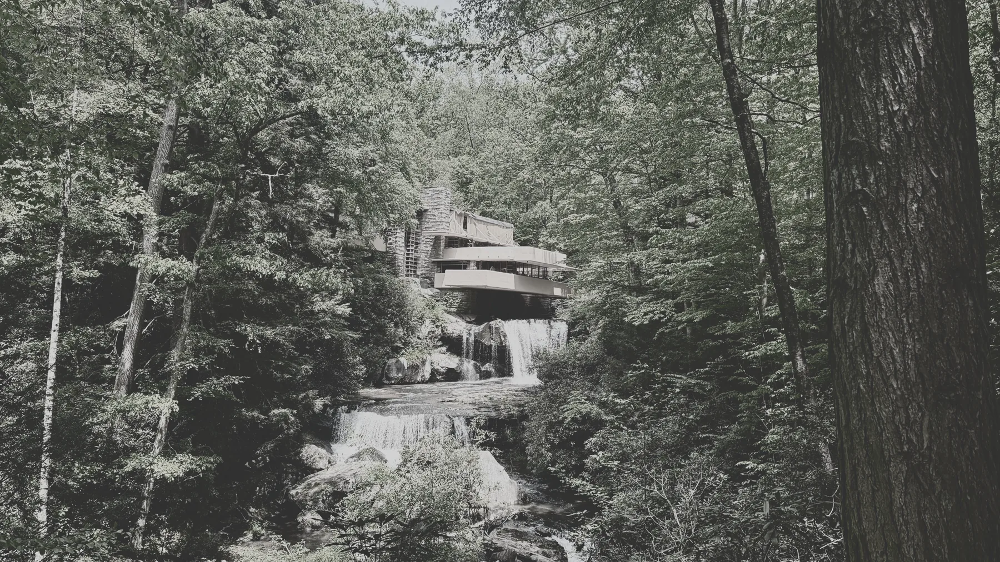
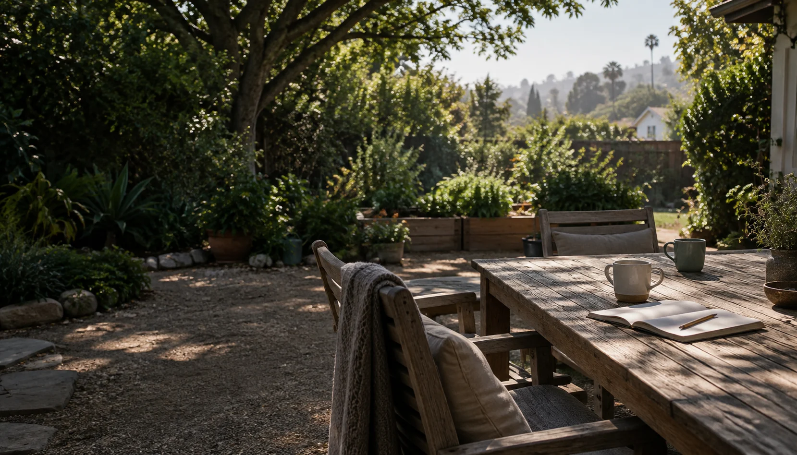

A teacher
What helps a person remain curious, persist through difficulty, and become more capable over time?

An ongoing series of conversations about what helps us flourish and how human capacities develop.
Which capacities increase human flourishing?
How can we cultivate them?
People develop practical knowledge through the work they do. The project asks what each perspective can see and what another may overlook.
What helps a person remain curious, persist through difficulty, and become more capable over time?
What do years of caring for people reveal about trust, responsibility, recovery, and the conditions that support life?
What makes attention, imagination, discipline, and expression possible, and how are those capacities kept alive?

No single profession or tradition sees the whole of human development. The value begins to emerge when their practical knowledge is placed in conversation.
Read the project noteEach conversation adds another perspective on what helps people flourish.